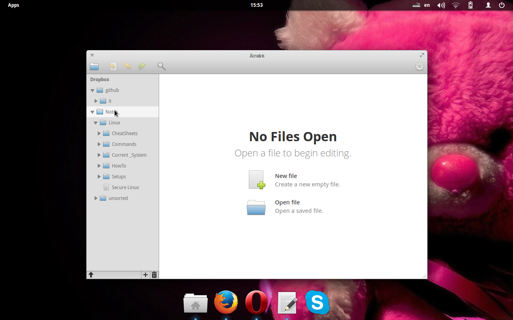

Убираем лишние ярлыки в Elementary OS
Меня всегда удручал беспорядок в в меню приложений Elementary OS . Конечно, ситуация одинакова для поголовного большинства дистрибутивов, так как информацию о том, как и где показывать программу прописывают сами создатели этих программ в *.desktop файлах. И многих из них похоже не волнует тот беспорядок, который происходит от такого халатного отношения к логике построения навигации.Это возможно исправить
Задача: убрать из Applications всё лишнее. При этом не только не потерять в удобстве работы, но и многократно выиграть.
Нам нужен мне порядок в меню и при этом работоспособность всех программ. Разные *.desktop файлы имеют различную структуру и порядок строк. Одним словом — никакого порядка. Сначала стоит добавлять две строчки в самое начало каждого *.desktop файла:
[Desktop Entry]
NoDisplay=true
Что за *.desktop файлы? — Что-то вроде ярлыков в Windows. Находятся в /usr/share/applications/ Я написала несложный bash файл. Визуально разбила его на три части:
- То, что я запускаю из консоли. Не хочу что бы обыватели видели специфические приложения. И сами что бы не смущались и меня не смущали что б.
- То, чему в меню программ делать по сути нечего. Архиваторы, проигрыватели, просмотрщики и прочие. Это обслуживающий персонал, работа которого должна быть изящна, быстра и ненавящива.
- Текстовые редакторы. Вынесла отдельным блоком для удобства. Так же как и в предшевствующем пункте, на иконку редактора я нажимала быть может несколько раз, первых и из любопытства. Если нам всё таки нужен редактор под рукой то никто не запрещает закрепить его в док. В меню приложений его не будет, а в доке будет.
Вот так, например:

Заметка:
Сохраняйте и запускайте.
chmod u+x Beautify_menu
sh Beautify_menu
Одно лишь неудобство. Скрипт необходимо перезапускать после обновлений программ. Так как они стирают старый и записывают новый *.desktop файл. Как следствие, наши правки теряются и нужно повторить скрипт. А как быть когда одна программа обновилась, а другие нет. Что тогда? Не переживайте, многократные строки ниже ни на что не влияют:
[Desktop Entry]
NoDisplay=true
[Desktop Entry]
NoDisplay=true
[Desktop Entry]
NoDisplay=true
[Desktop Entry]
NoDisplay=true
Потому скрипт можно запускать бесконечное множество раз.
Не забудьте поправить скрипт «под себя». Желаю всем удачи.